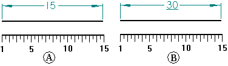

Return a (not to scale) dimension to its actual value
When you override the value of a driven dimension by editing its dimensional value, the dimension is not-to-scale. For example, if you override the dimensional value that is 15 millimeters (A) to be 30 millimeters, the actual size of the line that you see would still be 15 millimeters (B).

-
Right-click anywhere on a driven dimension, and clear the check mark preceding Not to Scale.
The dimension value is reset to its actual value. The not-to-scale underline notation is removed.
-
For more information bout editing a not-to-scale dimension, see the following help topics:
-
You can change the color of a driven dimension on the Colors tab in the Solid Edge Options dialog box.